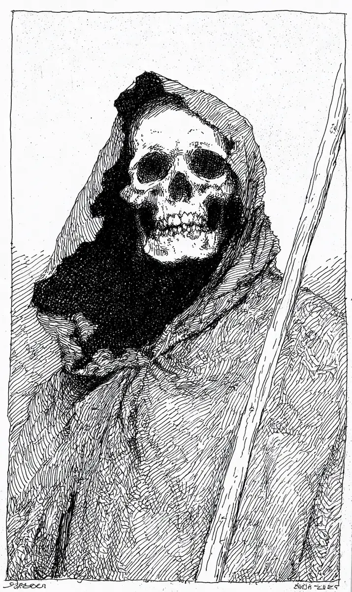

계단을 오르는 일이 이렇게 힘들 줄은 삼백 년 전엔 몰랐다.
[Three hundred years ago, he never knew that climbing stairs could be this hard.]
무릎이 시렸다, 무릎이 없는데도.
[His knees ached, even though he had no knees.]
5층, 503호.
[Fifth floor, unit 503.]
명단에 적힌 마지막 이름이 오늘 그를 기다리고 있었다.
[The last name written on the list was waiting for him today.]
그는 낫자루를 고쳐 쥐고 초인종을 눌렀다.
[He adjusted his grip on the scythe handle and pressed the doorbell.]
문이 열리자, 작은 할머니가 그를 올려다보았다.
[When the door opened, a tiny grandmother looked up at him.]
비명도, 기절도 없었다.
[No scream, no fainting.]
“아이고, 우리 손주 친구인가?”
[Oh my, are you a friend of my grandson?]
저승사자는 삼백 년 만에 처음으로 할 말을 잃었다.
[For the first time in three hundred years, the reaper was at a loss for words.]
“뭘 그리 서 있어, 어서 들어와.”
[Why are you just standing there, come on in.]
낫이 문틀에 걸려 요란한 소리를 냈다.
[The scythe caught on the door frame and made a loud clatter.]
“그 빗자루는 밖에 두고.”
[Leave that broom outside.]
집 안은 따뜻했고, 된장찌개 냄새가 가득했다.
[The house was warm, full of the smell of soybean stew.]
할머니는 그를 식탁 앞에 앉히고 밥 한 공기를 수북이 펐다.
[The grandmother sat him down at the table and scooped out a bowl of rice, heaped high.]
“어쩜 이렇게 말랐누, 꼭 멸치 같네.”
[How on earth did you get so thin, just like an anchovy.]
저승사자는 자기 손을 내려다보았다.
[The reaper looked down at his own hands.]
뼈밖에 없었다.
[There was nothing but bone.]
틀린 말은 아니었다.
[She was not wrong.]
숟가락을 드는 시늉을 했지만, 넘길 배가 없었다.
[He went through the motions of lifting the spoon, but he had no belly to swallow into.]
그래도 할머니는 자꾸 반찬을 그의 앞으로 밀었다.
[Still, the grandmother kept pushing side dishes toward him.]
“많이 먹어, 그래야 저승길도 든든하지.”
[Eat plenty, only then will even the road to the underworld feel hearty.]
그는 사레들릴 뻔했다, 목구멍도 없는데.
[He nearly choked, even though he had no throat.]
식사가 끝나자 할머니는 어디선가 목도리를 꺼냈다.
[When the meal was over, the grandmother pulled out a scarf from somewhere.]
“목이 허전하구먼, 이거라도 둘러.”
[Your neck looks bare, at least wrap this around it.]
앙상한 목뼈에 빨간 목도리가 감겼다.
[A red scarf wound around his gaunt neck bones.]
“이 추운 날 감기라도 들면 어쩌려고.”
[What would you do if you caught a cold on a chilly day like this.]
삼백 년 동안 아무도 그에게 따뜻하라고 말한 적이 없었다.
[For three hundred years, no one had ever told him to stay warm.]
명단을 펼칠 손이 떨렸다.
[His hand trembled as it reached to unroll the list.]
오늘은, 오늘만은, 그냥 돌아가기로 했다.
[Today, just for today, he decided to simply turn back.]
“할머니, 다음에 또 올게요.”
[Grandmother, I will come again next time.]
“그래, 몸조심하고.”
[Yes, take care of yourself.]
계단참에서 그는 명단을 마지막으로 확인했다.
[On the stair landing, he checked the list one last time.]
이름 칸에 적힌 글자가 눈에 들어왔다.
[The letters written in the name column caught his eye.]
자기 이름이었다.
[It was his own name.]
삼백 년 전에 잊어버린, 살아 있던 시절의 그 이름.
[The name he had forgotten three hundred years ago, from back when he was alive.]
뒤에서 문이 다시 열렸다.
[Behind him, the door opened again.]
할머니가 빙긋 웃으며 서 있었다.
[The grandmother stood there with a faint smile.]
이제 그 얼굴이 낯설게 보였다, 너무 오래 산 사람의 얼굴.
[Now her face looked unfamiliar, the face of someone who had lived far too long.]
“오래 기다렸네, 멸치 총각.”
[I have waited a long time, anchovy boy.]
손에는 그의 낫이 들려 있었다.
[In her hand was his scythe.]
“삼백 년을 일했으면, 이제 자네가 쉴 차례지.”
[If you have worked for three hundred years, now it is your turn to rest.]
그제야 그는 알았다, 오늘의 마지막 이름이 왜 자기 것이었는지.
[Only then did he understand why today’s last name had been his own.]
저승사자도 언젠가는 저승길을 간다.
[Even a reaper, someday, walks the road to the underworld.]
할머니는 그의 목도리를 한 번 더 단단히 여며 주었다.
[The grandmother tucked his scarf a little more snugly for him.]
“든든하게 먹었으니, 가는 길 안 춥겠어.”
[You ate well and full, so the road ahead will not feel cold.]
저승사자는 삼백 년 만에 처음으로 웃었다.
[For the first time in three hundred years, the reaper smiled.]
그리고 멸치처럼 마른 몸으로, 할머니를 따라 계단을 내려갔다.
[And with his body thin as an anchovy, he followed the grandmother down the stairs.]